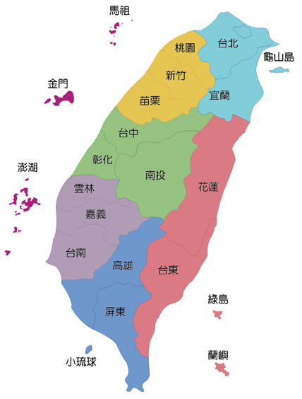
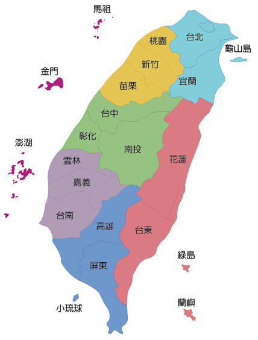
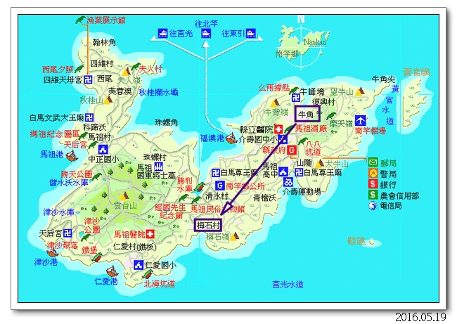

台灣及其離島
郵輪跳島旅遊： 金門，馬祖，澎湖
台灣防衛的第一線戰地
郵輪跳島旅遊： 金門，馬祖，澎湖
金門包括金門本島（大金門）、烈嶼（小金門）、大膽、二膽、獅嶼、猛虎嶼、草嶼、后嶼、東碇島、復興嶼等十二個大小島嶼，總面積151.656km2。 金門縣轄有三鎮（金城鎮、金湖鎮、金沙鎮）、三鄉（金寧鄉、烈嶼鄉、烏坵鄉（代管））。
馬祖主要由南竿島（馬祖島）、北竿島、高登島、亮島、東莒島（東犬島）、西莒島（西犬島）、東引島、西引島及其附屬小島共計36個島嶼、礁嶼組成，面积29.6平方公里，居民人口13,000多人。馬祖行政區分為南竿鄉，北竿鄉，莒光鄉及東引鄉。
南竿地圖
澎湖由97個大小島嶼組成，總面積約為128平方公里。澎湖全縣轄有1市（馬公市）、5鄉（湖西鄉、白沙鄉、西嶼鄉、望安鄉、七美鄉），共有6個鄉市。